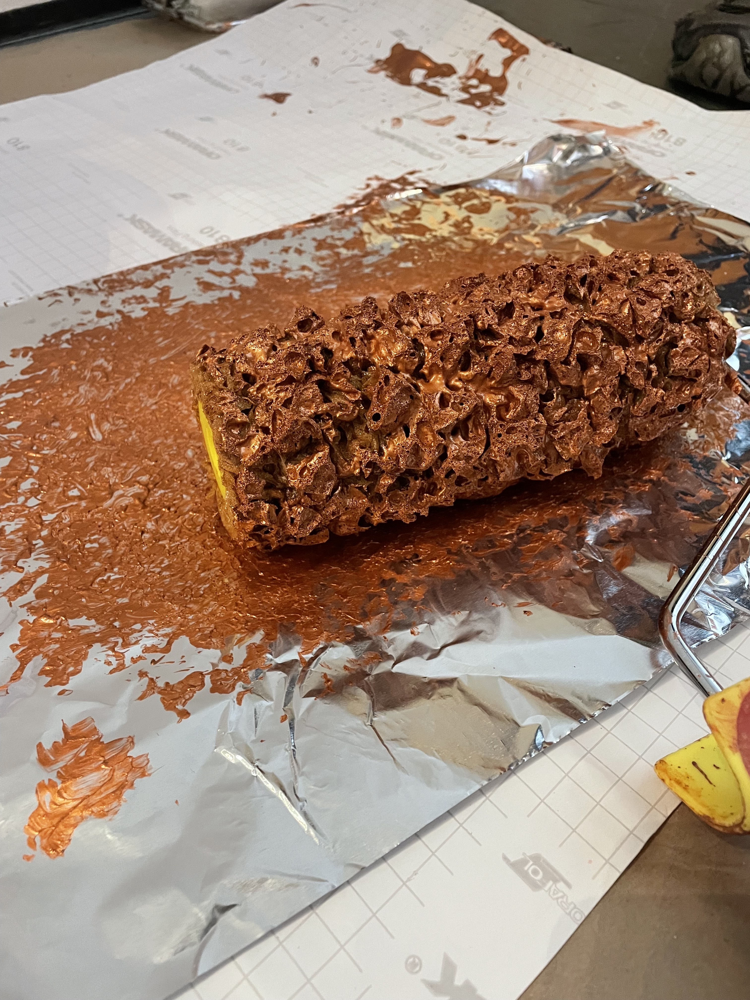
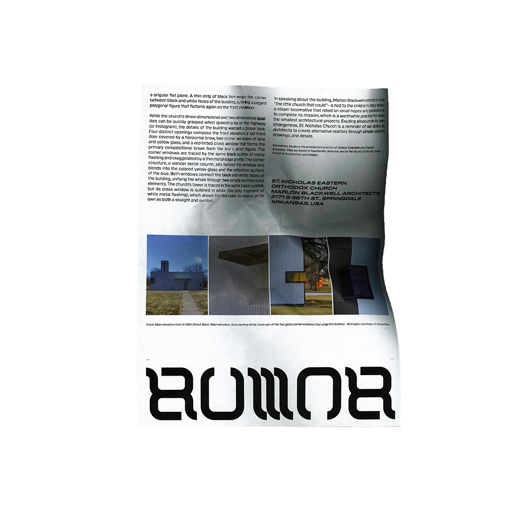
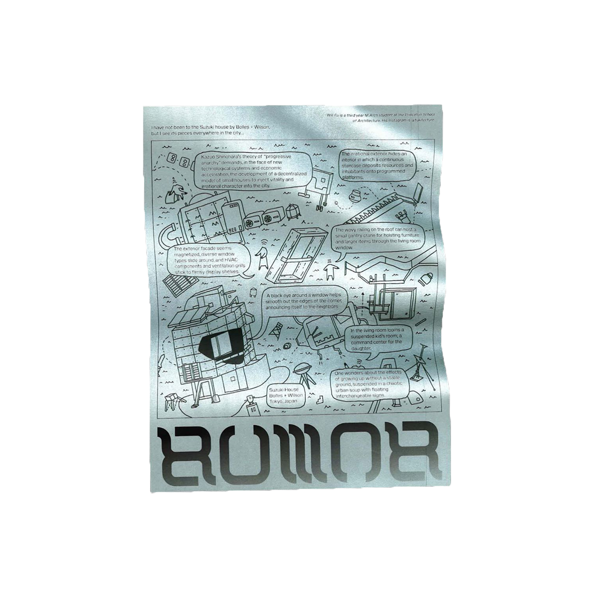
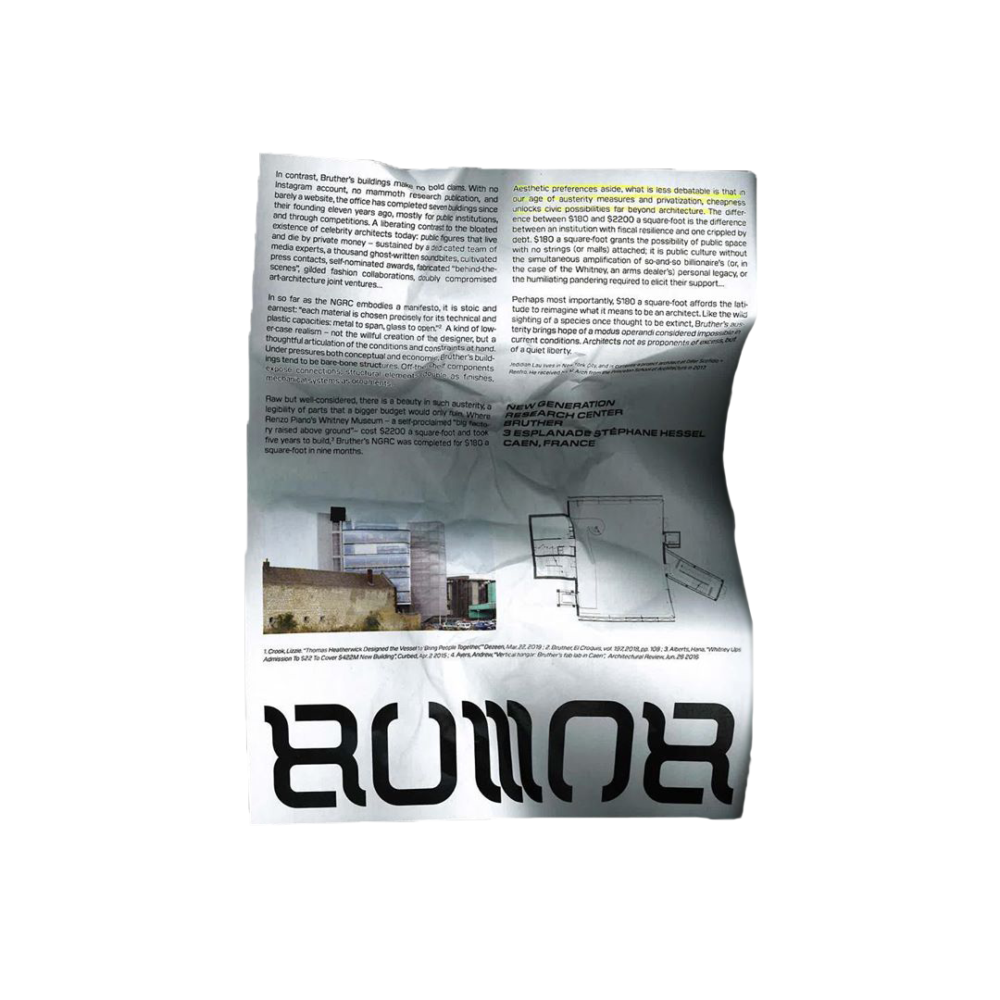

Various print ephemera from 3 years of design and production for exhibitions, concerts, classes, lectures, and other public programs at Pioneer Works in Red Hook, Brooklyn.
I printed most of this material in-house using a GR3750 Risograph. It arrived at Pioneer Works the same day I did and its upkeep fell to me. We only had a few color drums at first so the work was often limited by whatever colors were available at the moment.
Freelance lead designer, working with &Walsh in collaboration with the Google Events & Experiences Team, on a visual identity for the 2022 iteration of Google's annual developer conference.
I developed the initial concept, presenting key visuals from global conferences of the past that also promoted an optimistic perspective of the future and global society, like the World Expos and the Olympics.
The identity relied heavily on the introduction of the black pin line illustrations on top of Google's existing graphic system to set it apart from the broader Google brand.
I worked closely with the &Walsh team to develop and maintain the fidelity of the concept, providing feedback to their designers and animators and putting together references, sketches, and sample designs as needed.
Title wall and supporting exhibition graphics for New Ground: Jacob Samuel and Contemporary Etching, a retrospective of the work of master printmaker Jacob Samuel.
Part of the exhibition was a documentary the MoMA video team shot of Jacob, pulling prints and talking about his process, in his studio earlier that year. We were tasked with incorporating a looping ambient cut of footage from the film into our design for the title wall.

Print and digital posters for a yearly lecture series hosted by the Princeton Department of Comparative Literature.
Each year a graduate organizes a series of lectures by a lineup of academics from a range of different fields around a general subject related to comparative literature, critical theory, philosophy, etc.
The theme of the next years' series was a direct response to the first, and the design of the posters followed suit.
They substituted the rectilinear grid, title, and image treatment of the first series with the opposite: soft, warped, black and white imagery and bookish serif titles distributed around the negative space of the image.
Visual identity, print, and web design for a student-led publication at Princeton's Architecture MFA program.
I developed the visual identity, including the logo, typographic styles, and print templates, and designed and built the accompanying website. Our approach was to do it as cheaply as possible, with ready-made materials and pre-existing tools that were immediately available.
The idea for the ambigram logo design came from a specific folding pattern that the client had in mind for the printed publication, involving a cover flap that was inverted as you unfolded it.
The initial design of the main menu for the website translated that folding scheme into a web interface. The rest of the site was constructed out of iframe wrappers around pages from pre-existing platforms like Google Docs, Google Maps, Are.na, Wikipedia, replacing a more conventional back end. If editors needed to change something, they logged in to the appropriate platform and updated it there.

The original print template was a loose layout grid and set of type styles, formatted for 8.5x11, to be printed at the campus library with whatever paper was on hand.


Each issue of the publication is unique. As stewardship of Rumor has passed from one graduate to the next since its launch in 2019, they've taken their own spin on it, but the overall visual identity and design ethos has remained consistent.
Visual identity, print, web, and environmental graphics for the Alternative Art School Fair, hosted by Pioneer Works in 2016, which featured panels, workshops, and presentations from alternative art schools from around the world.
The identity centered around the use of flags to represent all of the diverse schools in attendance. We tried a few versions where I generated abstract flag patterns on my own, but they failed to communicate the uniqueness of each of the schools.
We decided to let them design their own flags, using a simple graphic system with a hex grid and a three-color palette to keep the look unified. But there was no consistency in each school representatives' ability to use any specific design software. Many of the schools that were participating in the fair were made up of only a handful of volunteers.
We sent out template packages with lots of different file types, and allowed submissions in whatever format each school could manage. We got GIFs, JPGs, MSPaint files, cellphone pictures of hand-colored printouts, and even one or two mail-in submissions. Someone made a web tool that let you fill out the flag pattern in a browser window and then export it as an SVG (which turned out to be pretty useful when I was preparing files for the printer!).
The design of the rest of the materials for the fair played off of the flags, either by re-using the hex pattern motif or co-opting the Unicode flag glyph (U+1F3F3) as an impromptu logo.